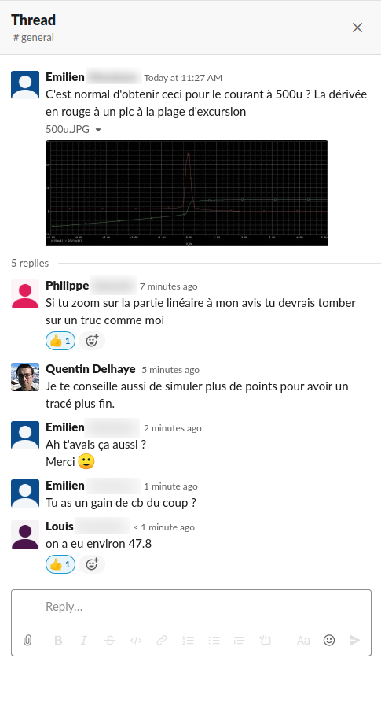

Laboratoires à distance, première semaine
Semaine du 16 mars 2020, le monde se transforme alors que tout le monde doit s’isoler. Comment les apprenants s’adaptent-ils aux dispositifs mis en place pour assurer l’enseignement à distance ?
Cette première semaine de distanciation forcée est une bonne occasion de revenir sur l’efficacité de la combinaison de plusieurs outils en fonction du groupe d’apprenants exposés.
Enseignements étudiés
Deux cours sont étudiés dans ce billet. Je présente rapidement leurs caractéristiques pertinentes ci-dessous avant de passer aux dispositifs d’enseignement à distance.
ELECH473 - Microprocessor Architectures
- Public : Cours dispensé aux MA1 Polytech Informatique, Électronique et aux MA1 Sciences informatiques. Il s’agit d’une cohorte d’environ 100 étudiants.
Note : L’option Électronique fait partie du programme Bruface, accueillant des étudiants de l’ULB, de la VUB et de nombreux étrangers, diversifiant d’autant plus le public de ce cours. - Type de laboratoire : Coder dans des logiciels multi-plate-formes (Windows/macOS/Linux).
- Évaluation : Devoirs à remettre une semaine après la séance de laboratoire. La remise de ces devoirs exploite des modules Moodle sur l’UV, l’expérience est donc déjà numérique pour les apprenants.
ELECH402 - Électronique analogique
- Public : Cours dispensé aux MA1 Polytech option Biomédical. Il s’agit d’une cohorte d’environ 25 étudiants (les mêmes dont je parlais lors de la réorientation de mon projet)
- Type de laboratoire : Simulations de circuits électronique en utilisant Cadence PSPICE. Ce logiciel ne tourne que sous Windows (natif ou en machine virtuelle).
- Évaluation : Examen de laboratoire prévu mi-mai.
Note : La communication à ce sujet a été effectuée lorsque les cours devaient encore reprendre le 19 avril. Étant donné que le reste du quadrimestre se déroulera à distance, cette évaluation devra être revue, dans sa forme voire dans son existence.
Outils mis en place
-
Une communication claire et détaillée par mail via Moodle. La première étape a été d’informer les apprenants des mesures prises pour assurer la continuité des laboratoires malgré la distance.
Ce message avait donc pour but de clarifier quels outils sont nécessaire pour réaliser le laboratoire, quels autres outils sont utilisés pour communiquer durant la séance et enfin le statut des évaluations afférentes aux manipulations.
Une capture du message envoyé pour ELECH473 peut être consultée ici et celle pour ELECH402 ici. -
Le maintien de l’évaluation.
Pour beaucoup d’apprenants, nous constatons que l’implication dans les laboratoires est directement corrélée à des éléments concordants avec leur stratégie d’apprentissage, notamment la présence de devoirs évalués (ELECH473) ou d’un examen de laboratoire (dans le cas de ELECH402). -
Communication durant la séance.
Deux outils ont été proposés aux apprenants : (1) Slack pour la communication ne nécessitant pas une réponse immédiate et (2) Jitsi au cas où ils veulent poser une question de vive voix ou partager leur écran.
Le premier a été choisi pour sa versatilité (création de salons de discussions, fils de discussion, messages privés, bonne organisation globale des discussions). Bien que nous aurions pu choisir son alternative open source Matrix, nous avons préféré capitaliser sur l’expérience que nous avions avec Slack et sa popularité.
Nous avons opté pour le second afin de proposer un outil open source à nos apprenant, ne nécessitant aucune installation supplémentaire puisqu’il fonctionne dans le navigateur, et pouvant être accédé sans licence coûteuse ou limitante.
Résultats
L’efficacité de ces outils est mesurée par la simple implication des apprenants dans leur utilisation.
ELECH473 - Des résultats décevants
Trois questions.
Trois questions ont été posées sur l’ensemble des trois séances de laboratoire de la semaine. En plus d’être décevant, ce premier résultat n’augurait rien de bon pour le laboratoire de ELECH402 devant se dérouler en fin de semaine.
Au cours des séances de laboratoire en présentiel, nous avons deux façons différentes de gérer les questions des étudiants.
Lors de la première, nous passons derrière les étudiants, montrant notre disponibilité et les interpellant directement si nous voyons qu’ils sont bloqués ou qu’ils se fourvoient.
Pour la seconde, nous leur indiquons clairement que nous sommes disponibles, mais restons à un endroit fixe où ils peuvent venir quérir notre aide si nécessaire.
Bien que la première méthode génère évidemment plus de questions de la part des étudiants, la seconde n’en est pas moins efficace. Ils sont simplement davantage confrontés à leur problèmes et doivent explicitement passer par une étape de formulation de leur problème s’il veulent efficacement poser leur question.
Il serait aussi raisonnable de penser qu’un groupe habitué à ce genre d’interaction en présentiel serait plus apte à s’adapter à une communication synchrone à distance.
Les résultats montrent qu’il n’en est rien.
Il se peut que nous ayons à faire à des étudiants n’ayant aucunement besoin d’encadrement complémentaire aux énoncés et ressources mises à leur disposition, auquel cas nous pourrions remettre en question la pertinence de l’organisation de séances en présentiel en ces temps d’amenuisement des ressources humaines.
Il se peut aussi plus simplement que cette cohorte n’ait pas accroché aux outils proposés, préférant travailler en groupe sans poser la moindre question.
Nous verrons lors de la correction des devoirs si ce comportement a un impact sur leurs résultats.
ELECH402 - Le succès
Les résultats sont diamétralement opposés.
Les étudiants étaient connectés dès le début du laboratoire à 8 h et sont restés actifs jusqu’à 12 h 30.
Ils n’ont pas hésité à poser leurs questions dans le salon public, mes réponses pouvant ainsi bénéficier à tout le monde.
À tel point que dans certains cas, ce sont les étudiants eux-mêmes qui répondaient aux questions de leurs camarades.

Pour cette cohorte, l’utilisation de ces outils à distance a été un franc succès.
Pourquoi une telle différence ?
Sur le papier, ces deux cohortes ont énormément de points communs :
- même niveau d’étude ;
- même parcours académique ;
- même vécu en laboratoire présentiel ;
- mêmes outils de communication à distance ;
- même communication pour présenter la situation et les aménagements ;
- mêmes types d’outils pour réaliser les manipulations, voire plus simples pour ELECH473, étant tout OS ;
- même implication lors des laboratoires présentiels.
Les étudiants de ELECH473 ont-ils le sentiment de maîtriser davantage les laboratoires ?
C’est difficile à croire vu leur niveau en présentiel : correct sans être exceptionnel. Au même titre, les étudiants de ELECH402 ont un niveau similaire.
La cohésion du groupe a-t-elle une influence ?
L’une des différences entre les deux cohortes est la diversité de la première (ELECH473) comparée à l’homogéniété de la seconde (ELECH402). Je pense qu’il s’agit là de l’hypothèse la plus probante : les étudiants de ELECH402 étant un groupe homogène, ils ont sans doute plus l’habitude de travailler ensemble pour leurs différents cours.
Mais dans ce cas, pourquoi les sous-groupes de ELECH473, par exemple « Polytech informatique » ne présente pas le même esprit de corps et le même niveau de participation à distance ?
Utilisent-ils des dispositifs similaires dans d’autres enseignement ?
La question est ouverte, mais il est possible que d’autres enseignements exploitant les mêmes outils peuvent encourager les étudiants à s’y investir.
Il n’existe pas de plate-forme idéale et universelle
Discord, Zoom, Google Meet, Adobe Connect, Microsoft Teams, les solutions sont aussi diverses que nombreuses. Chaque activité d’enseignement s’adressant à une cohorte particulière devrait se poser la question de la plate-forme la plus appropriée, tout en évitant de les démultiplier et perdre les apprenants en route.
Mise à jour : correction des devoirs de ELECH473
Les laboratoires sont composés de trois parties évaluées. La première a entièrement été effectuée en présentiel, suivant les modalités habituelles, tandis que les deuxième et troisième parties ont été réalisées à distance.
Observons les résultats entre les cohortes de 2017-18 (95 remises effectives de devoirs), 2018-19 (97 remises) et 2019-20 (96 remises), trois années où les méthodes d’évaluation ainsi que les évaluateurs sont restés stables.
Ces box plots mettent entre autre en évidence la médiane (ligne noire à l’intérieure des boîtes) et la moyenne (ligne verte discontinue) des évaluations des devoirs pour les trois années étudiées.
Les données et script ayant servis à générer ce graphique sont disponible ici.
Notons quelques précisions avant d’essayer d’interpréter ces résultats :
- L’évaluation de la partie RISC a été durcie à partie de 2018-19.
- L’évaluation de la partie TIS-100 est purement objective, basée sur un score obtenu dans un jeu.
Commençons par observer qu’il n’y a pas de différence significative entre les moyennes ou médianes, totales ou de chaque épreuve, au cours des années. La seule différence notable pourrait être pour les devoirs de SIMD où la dispersion est plus étendue que les années précédentes. On ne l’observe cependant pas pour ceux de TIS-100, eux aussi réalisés à distance.
Il semble donc que la réalisation à distance de ces laboratoires et l’absence de participation aux séances programmées n’a pas eu d’impact négatif sur les étudiants.

{kind=link}
{kind=link}